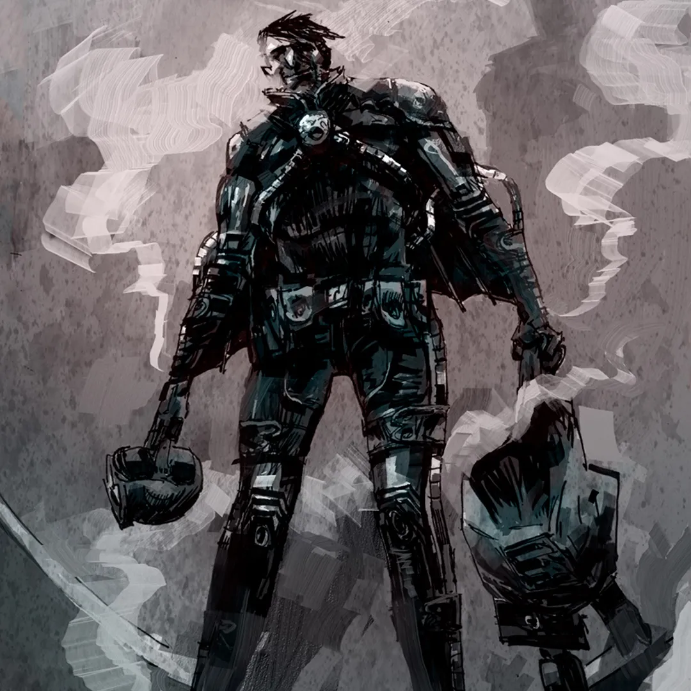
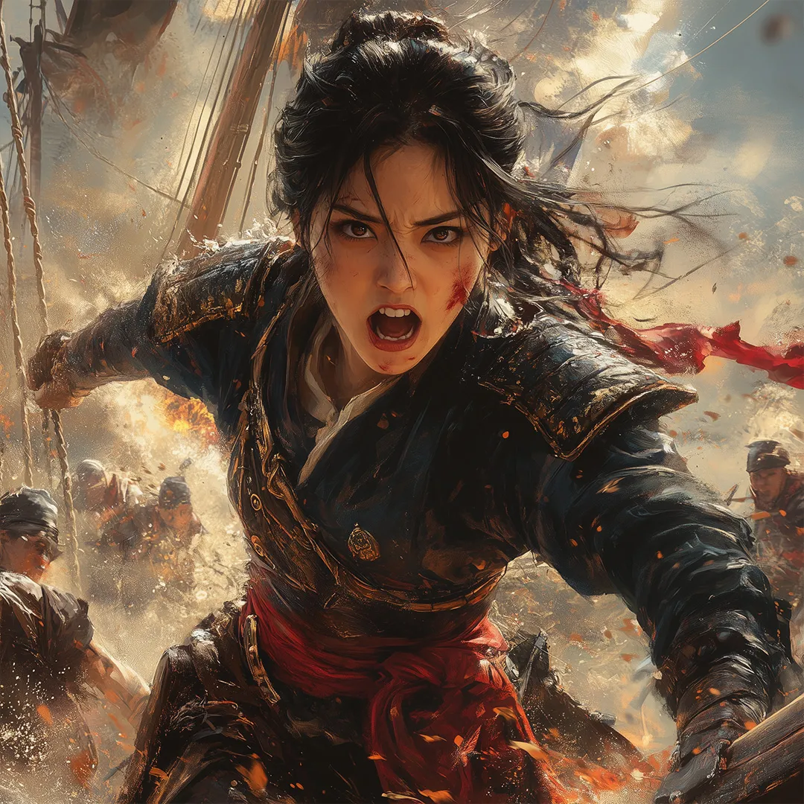
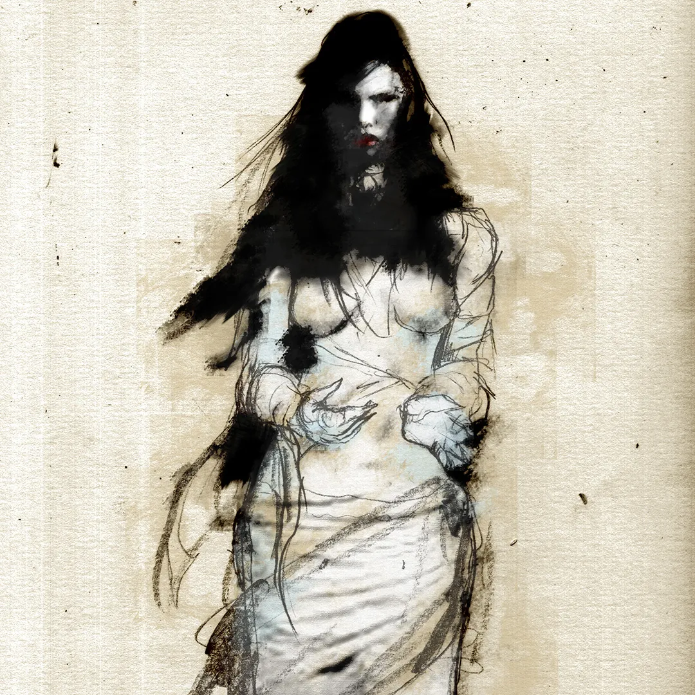
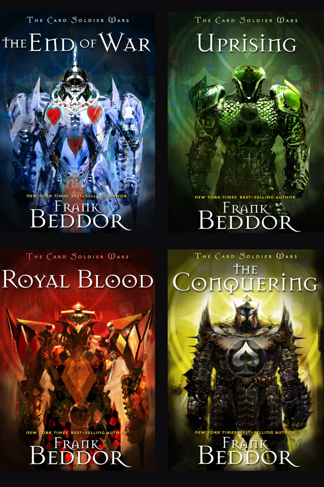
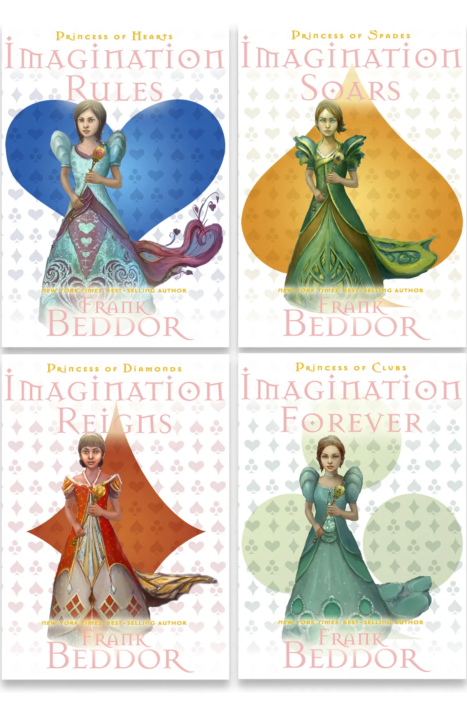

The Spy Who Walks Between Worlds
If Hatter Madigan is Wonderland's greatest warrior, Ovid Grey is its greatest secret.
His stories blend espionage, historical mystery, impossible technology, and high-stakes adventure into a new chapter of The Looking Glass Wars—one where every mission uncovers hidden histories across Wonderland and Earth.

A New Hero Enters the Wonderverse
Introduced in Hatter M Vol. 5, Jet Seer steps into the spotlight in her own time-spanning saga. A time traveler from humanity's last free future, she journeys across history to protect the moments when imagination changed civilization. Every visionary, every era, and every mission becomes a new adventure—blending historical fiction, science fiction, and high-stakes action into an endlessly expandable series about the battle for humanity's future.

The Pirate
History remembers Ching Shih. Wonderland remembers Su Jiumei.
As rival empires clash during the Opium Wars, Hatter Madigan finds an unexpected ally in the fearless pirate whose story history erased. Their partnership uncovers a hidden truth: the war for Imagination has never belonged to one world—or one culture.
Su Jiumei expands The Looking Glass Wars beyond Victorian England, revealing that every civilization carries its own Wonderland, its own myths, and its own forgotten heroes. What begins as a pirate adventure becomes the doorway to a global mythology, where history and legend are only reflections of a much larger truth.

Realm & the White Flower Tribe
Hidden deep within the Grand Canyon, the White Flower Tribe protects one of Wonderland's oldest secrets: White Luminescence—a rare form of imagination that heals instead of destroys. Their young shaman, Realm, can grow living illusions from nature itself, turning flowers, light, and memory into powerful allies. When Hatter crashes into her hidden world, two philosophies collide, revealing that imagination's greatest strength may not be the power to conquer—but the power to transform.

Every Suit family has its soldiers. Every soldier has something to protect.
A series following the Card Soldiers of Hearts, Diamonds, Spades, and Clubs as they defend Imagination itself.

Four princesses. Four suits. One queendom that needs all of them.
Hearts, Spades, Diamonds, and Clubs — the young royals learning that imagination, wit, and kindness are the sharpest tools they have.